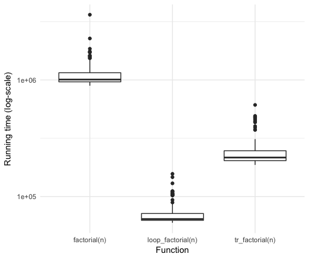
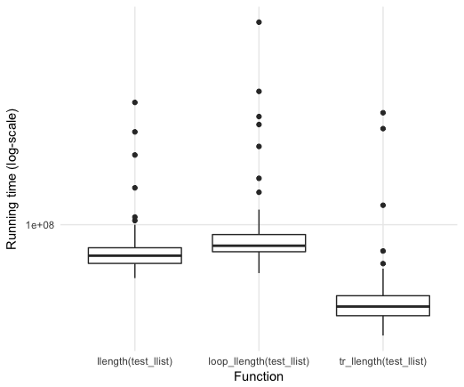

tailr — Tail Recursion Optimisation
Believe it or not, all the bother with setting up this blog was such that I could write this post easier than I could on Wordpress. So now, let us get to some actual R programming!
Tail recursion
Recursive functions are the natural way to express iterations in a functional programming language, but in R, they can be significantly slower than loop-versions and for moderately long sequences or moderately deep trees, recursive functions will reach a limit imposted on them by the stack limit.
There are known solutions to these problems, as long as functions are written to be tail-recursive, meaning that the return value of a function is either a base value or another recursive call, but where we do not call recursively to then do something with the result.
An example of a tail-recursive function is this version of factorial:
factorial <- function(n, acc = 1) {
if (n <= 1) acc
else factorial(n - 1, acc * n)
}In the base case, we return a value, in the recursive call, we return the value of the recursion. So, we recurse at the tail of the function, thus the name, “tail-recursive”.
An example of a function that is not tail-recursive, we have this version of factorial:
factorial <- function(n) {
if (n <= 1) 1
else n * factorial(n - 1)
}We still recurse at the tail of the function, but it is not the very last thing we do, because after we get the value from the recursive call, we do something with it before we return: we multiply it with n.
The difference between the two functions is that the final value of the tail-recursive variant is the exact result of the recursive call. This is something we achieve by passing an accumulator, acc, along recursive calls. Instead of doing additional computations after a recursive call, we do these computations and pass them along the recursive call in the accumulator.
For most recursive functions, it is a simple matter to add an accumulator and then make the function tail-recursive, but it is something that you can always do. Sometimes, you just need continuation-passing style programming to do it.1
The main reason we are interested in tail-recursive functions is that we can optimise them by replacing function calls with loops. Calling functions involve setting up execution frames/environments—with the overhead involved with that—and function calls require stack space, which we might run out of if we have very deep recursive calls. With loops, we just have to update local variables whenever we restart a loop.
For tail-recursive functions, we can always put the function body inside a loop and replace recursive calls with an update of the local variables—setting them to the parameters of the recursive call—and we have eliminated the function call overhead and issues with stack space. Well, we can almost always do this—since we can access the call stack programmatically in R, we cannot guarantee to get exactly the same behaviour if we do this. With some static analysis, it should be possible to determine when it is safe to do so, I think, but I haven’t looked into it.
In most functional programming languages, and all pure functional programming languages—where recursion is the only option for iteration—this tail-recursion optimisation is built into the language. Because of the dynamic nature of R, and the meta-programming capabilities of the language, it is less straightforward to implement this optimisation at the language level in R; at least it hasn’t been done, so someone must have decided it wasn’t worth the bother. The lack of this optimisation, however, detracts from the appeal of writing pure functional code in R. If you rely on recursion instead of loops, you get punished for it.
So, you are motivated to use loops instead of recursion in R, but sometimes that just leads to ugly code.
A detour to pattern matching
In a chapter in my upcoming book on Domain-specific languages in R I have a chapter on how to do ML- or Haskell-like pattern matching in R. The ideas from that chapter can also be found in my pmatch package. Since this package works well with data structure manipulation, something that was complicated in my book on those, I expect I will try to implement all those data structures using the new framework, so you can expect to hear more about that.
For now, though, consider a simple case: linked lists. The list type in R is really a vector with a pre-allocated size. Because of this, prepending to a list object is a linear time operation. We can implement linked lists with constant time prepending (but still linear time appending, unless we are clever) like this:
library(pmatch)
linked_list := NIL | CONS(car, cdr : linked_list)This code defines two “constructors” for linked lists. We can construct an empty linked list using NIL and we can construct a non-empty list by adding a head—by tradition called car—to an existing list—by tradition called cdr.
lst <- CONS(1, CONS(2, CONS(3, NIL)))
lst## CONS(car = 1, cdr = CONS(car = 2, cdr = CONS(car = 3, cdr = NIL)))
Once we have defined constructors from a type, we can match patterns against values, and e.g. recognise when a linked list is empty—equal to NIL—or not—matches a CONS pattern.
llength <- function(lst, acc = 0) {
cases(lst,
NIL -> acc,
CONS(car, cdr) -> llength(cdr, acc + 1))
}
llength(lst)## [1] 3
llrev <- function(lst, acc = NIL) {
cases(lst,
NIL -> acc,
CONS(car, cdr) -> llrev(cdr, CONS(car, acc)))
}
llrev(lst)## CONS(car = 3, cdr = CONS(car = 2, cdr = CONS(car = 1, cdr = NIL)))
Here, you might inject that there is little gain in pattern matching. After all, checking if a list is empty or not isn’t that complicated. And you are right about lists. But examples involving search trees might convince you of the benefits of pattern matching…
Search trees
Search trees are binary trees that holds values in all inner nodes and satisfy the invariant that all values in a left subtree are smaller than the value in an inner node, and all values in the right subtree are larger.
We can define a search tree like this:
search_tree := E | T(left : search_tree, value, right : search_tree)Here, we use an empty tree, E, for leaves. We only store values in inner nodes, created with the constructor T.
tree <- T(T(E,1,E), 3, T(E,4,E))
tree## T(left = T(left = E, value = 1, right = E), value = 3, right = T(left = E, value = 4, right = E))
Because of the invariant, we know where values should be found if they are in a tree. We can look at the value in the root of a subtree. If it is larger than the value we are searching for, we need to search to the left. If it is smaller, we need to search to the right. Otherwise, it must be equal to the value. If we reach an empty tree in this search, then we know the value is no the tree.
member <- function(tree, x) {
cases(tree,
E -> FALSE,
T(left, val, right) -> {
if (x < val) member(left, x)
else if (x > val) member(right, x)
else TRUE
})
}
member(tree, 0)## [1] FALSE
member(tree, 1)## [1] TRUE
member(tree, 2)## [1] FALSE
member(tree, 3)## [1] TRUE
member(tree, 4)## [1] TRUE
Since data in R, in general, are immutable, we cannot update search trees. We can, however, create copies with updated structure, and because R implements “copy-on-write”, this is an efficient way of updating the structure of data we work on. If we insert elements into a search tree, what we will really be doing is to create a new tree that holds all the values the old tree held plus the new values. If the value is already in the old tree we do not add it again, but we will be returning a new tree. We create the new tree in a recursion.
Whenever we call recursively, we create a new inner node that will contain one subtree that is an exact copy of one of the subtrees from the old tree—shared with the old tree so no actual copying takes place—and one subtree that is created in the recursive insertion. The recursion goes left or right using the same logic as in the member function. If we find that the element is already in the tree, we terminate the recursion with the tree that contains the value. If we reach an empty tree, the element was not in the old tree, but we have found the place where it should be in the new tree, so we create an inner tree with two empty subtrees and the value.
insert <- function(tree, x) {
cases(tree,
E -> T(E, x, E),
T(left, val, right) ->
if (x < val)
T(insert(left, x), val, right)
else if (x > val)
T(left, val, insert(right, x))
else
T(left, x, right)
)
}
tree <- E
for (i in sample(2:4))
tree <- insert(tree, i)
for (i in 1:6) {
cat(i, " : ", member(tree, i), "\n")
}## 1 : FALSE
## 2 : TRUE
## 3 : TRUE
## 4 : TRUE
## 5 : FALSE
## 6 : FALSE
The worst-case time usage for both of these functions is proportional to the depth of the tree, and that can be linear in the number of elements stored in the tree. If we keep the tree balanced, though, the time is reduced to logarithmic in the size of the tree. A classical data structure for keeping search trees balanced is so-called red-black search trees. Implementing these using pointer or reference manipulation in languages such as C/C++ or Java can be quite challenging, but in a functional language, balancing such trees is a simple matter of transforming trees based on local structure.
Red-black search trees are binary search trees where each tree has a colour associated, either red or black. We can define colours using constant constructors and define a red-black search tree by extending the plain search tree:
colour := R | B
rb_tree := E | T(col : colour, left : rb_tree, value, right : rb_tree)Except for including the colour in the pattern matching, the member function for this data structure is the same as for the plain search tree.
member <- function(tree, x) {
cases(tree,
E -> FALSE,
T(col, left, val, right) -> {
if (x < val) member(left, x)
else if (x > val) member(right, x)
else TRUE
})
}
tree <- T(R, E, 2, T(B, E, 5, E))
for (i in 1:6) {
cat(i, " : ", member(tree, i), "\n")
}## 1 : FALSE
## 2 : TRUE
## 3 : FALSE
## 4 : FALSE
## 5 : TRUE
## 6 : FALSE
Red-black search trees are kept balanced because we enforce these two invariants:
- No red node has a red parent.
- Every path from the root to a leaf has the same number of black nodes.
If every path from root to a leaf has the same number of black nodes, then the tree is perfectly balanced if we ignored the red nodes. Since no red node has a red parent, the longest path, when red nodes are considered, can be no longer than twice the length of the shortest path.
These invariants can be guaranteed by always inserting new values in red leaves, potentially invalidating the first invariant, and then rebalancing all sub-trees that invalidate this invariant, and at the end setting the root to be black. The rebalancing is done when returning from the recursive insertion calls that otherwise work as insertion in the plain search tree.
insert_rec <- function(tree, x) {
match(tree,
E -> T(R, E, x, E),
T(col, left, val, right) -> {
if (x < val)
balance(T(col, insert_rec(left, x), val, right))
else if (x > val)
balance(T(col, left, val, insert_rec(right, x)))
else
T(col, left, x, right) # already here
})
}
insert <- function(tree, x) {
tree <- insert_rec(tree, x)
tree$col <- B
tree
}The transformation rules for the balance function are shown in the figure below:

Every time we see one of the trees around the edges, we must transform it into the tree in the middle. We can implement these transformations as simple as this:
balance <- function(tree) {
match(tree,
T(B,T(R,a,x,T(R,b,y,c)),z,d) -> T(R,T(B,a,x,b),y,T(B,c,z,d)),
T(B,T(R,T(R,a,x,b),y,c),z,d) -> T(R,T(B,a,x,b),y,T(B,c,z,d)),
T(B,a,x,T(R,b,y,T(R,c,z,d))) -> T(R,T(B,a,x,b),y,T(B,c,z,d)),
T(B,a,x,T(R,T(R,b,y,c),z,d)) -> T(R,T(B,a,x,b),y,T(B,c,z,d)),
otherwise -> tree)
}For contrast, below is the version I presented in Functional Data-structures in R):
rbt_balance <- function(colour, value, left, right) {
if (pattern_match(a = left$left, b = left$right$left,
c = left$right$right, d = right,
x = left$value, y = left$right$value, z = value,
colour == BLACK, left$colour == RED, left$right$colour == RED)
|| pattern_match(a = left$left$left, b = left$left$right,
c = left$right, d = right,
x = left$left$value, y = left$value, z = value,
colour == BLACK, left$colour == RED, left$left$colour == RED)
|| pattern_match(a = left, b = right$left,
c = right$right$left, d = right$right$right,
x = value, y = right$value, z = right$right$value,
colour == BLACK, right$colour == RED, right$right$colour == RED)
|| pattern_match(a = left, b = right$left$left,
c = right$left$right, d = right$right,
x = value, y = right$left$value, z = right$value,
colour == BLACK, right$colour == RED, right$left$colour == RED)
) {
left <- red_black_tree_node(colour = BLACK, value = x, left = a, right = b)
right <- red_black_tree_node(colour = BLACK, value = z, left = c, right = d)
red_black_tree_node(colour = RED, value = y, left, right)
} else {
red_black_tree_node(colour, value, left, right)
}
}Even though this version also has a function for pattern matching, I think we can agree that the former version is more elegant.
The insertion function is not tail-recursive, so it is not a function we can readily optimise, but let me worry about that for a later time. I just described it here to motivate pattern matching approaches.
Making llength looping
Let us return to the linked lists and the function for computing the length of a linked list:
llength <- function(lst, acc = 0) {
cases(lst,
NIL -> acc,
CONS(car, cdr) -> llength(cdr, acc + 1))
}It is a nice and simple function that is easy to understand, but lists can get long, and then we run into problems with too deep recursions. A looping version is somewhat more complicated. An initial attempt could look like this:
loop_llength <- function(llist) {
acc <- 0
repeat {
cases(llist,
NIL -> return(acc),
CONS(car, cdr) -> {
acc <- acc + 1
llist <- cdr
})
}
}This version will not function, however, since it tries to return from inside a call to cases, and return only works inside the immediate scope.
Instead, we can use callCC to implement a non-local return like this:
loop_llength <- function(llist) {
callCC(function(escape) {
acc <- 0
repeat {
cases(llist,
NIL -> escape(acc),
CONS(car, cdr) -> {
acc <<- acc + 1
llist <<- cdr
})
}
})
}Notice that we have to use the <<- assignment operator here. This is for the same reason that we need a non-local return. The expression inside the call to cases is evaluated in a different environment than the local function environment, so to get to the actual variables we want to assign to, we need the non-local assignment operator.
This version of the length calculation works, but is hardly simple, and can be made even more efficient by replacing cases calls with a series of if-statements. But that is not something I want to do by hand—I want to automatically translate tail-recursive functions into looping functions.
The tailr package
To alleviate the problems I have with recursion, I wrote a meta-program for automatically translating tail-recursive functions into looping versions. This program is available in the tail package that you can get from either CRAN:
install.packages("tailr")or from GitHub (for the development version):
# install.packages("devtools")
devtools::install_github("mailund/tailr")The goal of tailr is to automatically transform tail-recursive functions into loops or trampolines. At present, it implements the looping transformation, so it can handle simple tail-recursive functions, but will have problems with continuation-passing programming. Once I figure out how to handle that in a better way, I will write about it here.
Examples using tailr
As a simple example of how tailr can be used, can take the classical recursive function for factorial and write it in a tail-recursive form using an accumulator:
factorial <- function(n, acc = 1) {
if (n <= 1) acc
else factorial(n - 1, acc * n)
}We can then, automatically, translate that into a looping version:
tr_factorial <- tailr::loop_transform(factorial, byte_compile = FALSE)
tr_factorial## function (n, acc = 1)
## {
## .tailr_n <- n
## .tailr_acc <- acc
## callCC(function(escape) {
## repeat {
## n <- .tailr_n
## acc <- .tailr_acc
## if (n <= 1)
## escape(acc)
## else {
## .tailr_n <<- n - 1
## .tailr_acc <<- acc * n
## }
## }
## })
## }
tr_factorial(100)## [1] 9.332622e+157
I have disabled byte compilation to make running time comparisons fair; by default it is enabled. For a function as simple as factorial, though, byte compiling will not affect the running time in any substantial amount.
We can compare the running time with the recursive function and a version that is written using a loop:
loop_factorial <- function(n) {
val <- 1
while (n > 1) {
val <- n * val
n <- n - 1
}
val
}
n <- 1000
microbenchmark::microbenchmark(factorial(n),
loop_factorial(n),
tr_factorial(n))## Unit: microseconds
## expr min lq mean median uq max
## factorial(n) 832.102 916.1770 1144.4888 1004.703 1221.802 6089.741
## loop_factorial(n) 57.902 58.4760 87.9642 60.415 61.612 2652.412
## tr_factorial(n) 177.859 188.1715 232.1562 205.623 264.845 459.217
## neval
## 100
## 100
## 100

There is some overhead in using the automatically translated version over the hand-written, naturally, and for a simple function such as factorial, it is not hard to write the loop-variant instead of the recursive function.
As we saw, rewriting llength as a looping function was a bit harder. With tailr we can do this automatically, however:
tr_llength <- tailr::loop_transform(llength)The function we generate is rather complicated
tr_llength## function (lst, acc = 0)
## {
## .tailr_lst <- lst
## .tailr_acc <- acc
## callCC(function(escape) {
## repeat {
## lst <- .tailr_lst
## acc <- .tailr_acc
## if (!rlang::is_null(..match_env <- pmatch::test_pattern(lst,
## NIL)))
## with(..match_env, escape(acc))
## else if (!rlang::is_null(..match_env <- pmatch::test_pattern(lst,
## CONS(car, cdr))))
## with(..match_env, {
## .tailr_lst <<- cdr
## .tailr_acc <<- acc + 1
## })
## }
## })
## }
## <bytecode: 0x7fc6668ef070>
but, then, it is not one we want to manually inspect in any case.
The automatically generated function is complicated, but it actually outcompetes the hand-written loop version.
make_llist <- function(n) {
l <- NIL
for (i in 1:n) {
l <- CONS(i, l)
}
l
}
test_llist <- make_llist(100)
microbenchmark::microbenchmark(llength(test_llist),
loop_llength(test_llist),
tr_llength(test_llist))## Unit: milliseconds
## expr min lq mean median uq
## llength(test_llist) 62.73938 69.81038 76.38766 74.14394 79.47418
## loop_llength(test_llist) 67.93074 75.27335 85.03931 79.48944 84.02637
## tr_llength(test_llist) 41.22978 46.12606 53.44397 50.37396 53.86556
## max neval
## 121.7598 100
## 431.3518 100
## 185.3926 100

It is, of course, possible to write a faster hand-written function to deal with this case, but it will be about as complicated as the automatically generated function, and you don’t really want to write that by hand.
As you have no doubt noticed about llength, it is not in fact tail-recursive, from the look of it, since the final recursion is enclosed by a call to cases. The function is only tail-recursive because it can be translated into one by rewriting the cases function call to a sequence of if-statements. The tailr package doesn’t handle cases from pmatch by knowing about this package. Instead, it has a mechanism that lets you provide re-writing rules.
If you set the attribute “tailr_transform” on a function, and set this attribute to a function, then that function will be called when tailr sees the function, before it attempts any other processing. The attribute must be a function that maps an expression to another, re-written, expression. The one for cases looks like this:
tailr_transform_call <- function(expr) {
stopifnot(rlang::call_name(expr) == "cases")
args <- rlang::call_args(expr)
value <- args[[1]]
patterns <- args[-1]
eval(rlang::expr(cases_expr(!!value, !!!patterns)))
}
attr(cases, "tailr_transform") <- tailr_transform_callYou can use this mechanism to support tail-recursion for non-tail-recursive functions that can be rewritten to be tail-recursive.
- I wrote about continuation-passing in my Functional Programming in R book, but it is an excellent topic for a post here, so expect to hear more about it later. It won’t be in this post, though. [return]